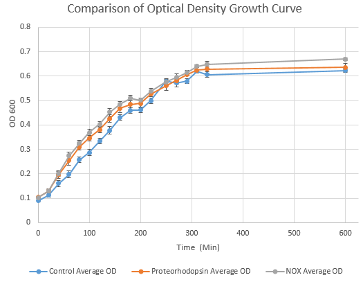
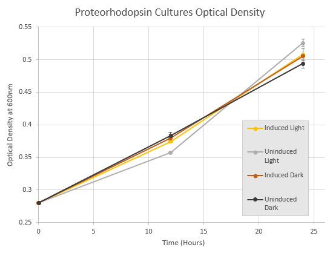
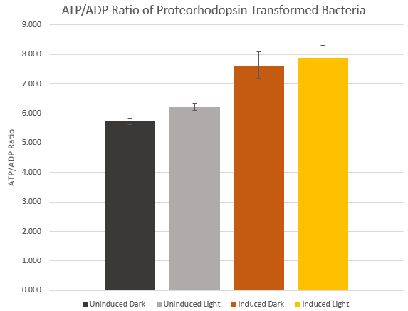
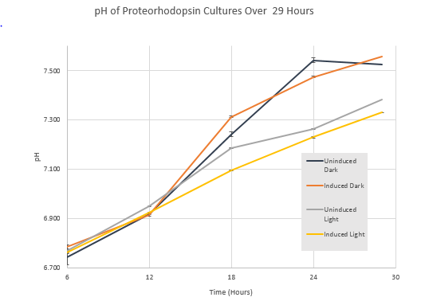
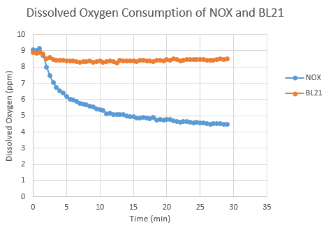

Below are the results for each of the experiments we conducted.
Project Results
General Growth Curve
Optical densities over time were collected for control BL21 E. coli and BL21 E. coli transformed with Proteorhodopsin (BBa_K1282002) and NOX (BBa_K1282003) expressing plasmids. Data points were collected in three replicates, the standard deviation of which is shown with error bars. The data shows no major departure in either of the transformed groups from the untransformed control bacteria. For NOX this indicates that there isn’t any significant cytotoxic effect of the expression of the his-tagged protein. The Proteorhodopsin transformed culture doesn’t conclusively demonstrate whether the expressed proteins activity is cytotoxic as this experiment was conducted in cultures that were not exposed to beta-carotene or additional light and so, while the protein is expected to be expressed in the system it will not be conformationally active. A Proteorhodopsin specific growth assay was done to characterize whether or not the activity of Proteorhodopsin is cytotoxic in our system.

Proteorhodopsin Cytotoxicity Growth Assay
This assay compared optical density over time between the different experimental groups for BL21 E. coli transformed with BBa_K1282002 in order to characterize any effect that active proteorhodopsin might have on cell growth and vitality compared to inactive forms. There was no major discrepancy between the optical densities of the active induced light group and the inactivated groups. This supports the idea that the action of proteorhodopsin in our system is not significantly cytotoxic.

Proteorhodopsin ATP/ADP Assay
ATP/ADP ratios of BBa_K1282002 transformed BL21 E. coli were measured across different experimental groups using an EnzyLight kit. It is expected that functioning Proteorhodopsin would increase the ATP content of a bacterial cell by increasing the concentration of extracellular H+. Functional Proteorhodopsin is expected only from the group induced with beta-carotene and exposed to light. However the ATP/ADP ratios of both the induced light and induced dark groups were higher than the uninduced groups and they were within error of each other. This suggests a potential leakage of light into the induced dark group. Nevertheless the activated construct is producing a measurable effect on the ATP/ADP ratio compared to inactivated forms without beta-carotene.

Proteorhodopsin Culture pH Characterization
To demonstrate the effect of our proteorhodopsin construct on the pH of the extracellular environment BL21 E. coli were transformed with BBa_K1282002 and cultured in experimental groups for 29 hours. pH of the cultures was measured using pH probes every 6 hours and at the end of the experiment. Active proteorhodopsin should result in an increase in extracellular H+ and thus a decrease in pH of the culture over time. pH across all samples increased over the duration of the experiment however the pH of the induced light group, which was expected to have functional proteorhodopsin maintained the lowest pH at every timepoint throughout the experiment.

NOX Dissolved Oxygen Consumption
This dissolved oxygen assay was conducted to determine whether or not BBa_K1282003 was producing NOX sufficiently to impact dissolved oxygen levels. Over the course of the first 10 minutes the PBS containing BBa_K1282003 transformed Bl21 E. coli lost 35% of the initial dissolved oxygen whereas the PBS containing the control BL21 group saw only a 5% decrease. This is important in the context of microbial electrolysis cells as cells only function at high efficiency in anaerobic environments, by using a biological means of helping to maintain an anaerobic state this construct can likely increase the efficiency of microbial electrolysis cells.

Nox His Tag Purified SDS-PAGE
Despite our greatest efforts we were unable to image a gel of purified his-tagged Nox protein. In our collaboration effort with the Harvard University iGEM team we asked the team to attempt to his tag purify the Nox protein. Unfortunately the attempt was unsuccessful. Through our characterization assay we’ve determined that the protein is indeed being made and appears to be working.